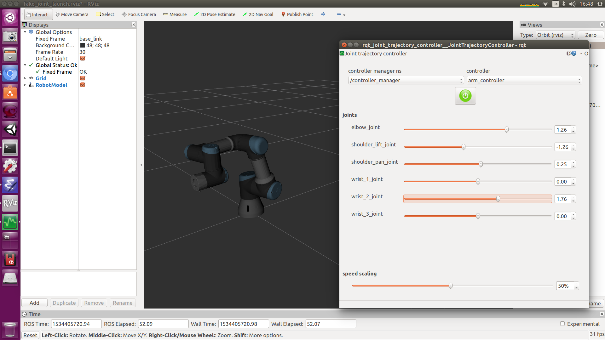
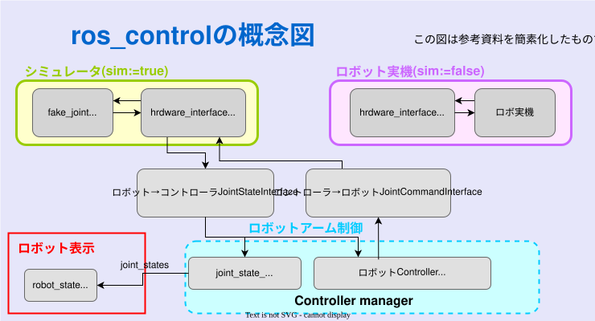
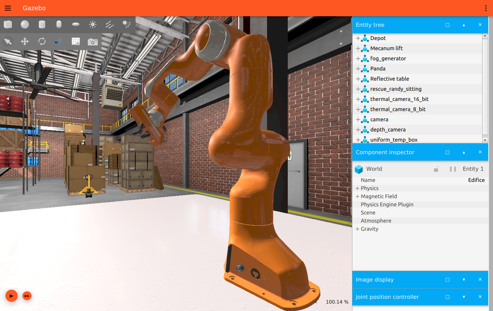

ROSにおけるシミュレータ
大阪大学 中島優作
本スライドではシミュレータ上でロボットを動かす方法を説明します。
環境構築がまだの方は→環境構築はこちら
→ 全画面表示

使い方↓

GUIで関節を動かせます
このGUIはJointTrajectoryControllerというロボットコントローラです
GUIで関節を動かせます
<!-- Load URDF -->
<param name="robot_description" command="$(find xacro)/xacro '$(arg model)'" />
<node name="robot_state_publisher" pkg="robot_state_publisher" type="robot_state_publisher" />
<!-- launch rviz -->
<node name="rviz" pkg="rviz" type="rviz" respawn="false" args="-d $(arg rviz_config)" output="screen"/><!-- Load controllers -->
<rosparam file="$(arg controller_config_file)" command="load"/>
<node name="ros_control_controller_spawner" pkg="controller_manager" type="spawner"
args="$(arg controllers)" output="screen" respawn="false" />
<!-- Launch moveit -->
<include file="$(find ur5e_moveit_config)/launch/move_group.launch">
<arg name="allow_trajectory_execution" default="true" />
<arg name="fake_execution" value="false" />
</include><!--Run Fake joint driver -->
<node name="fake_joint_driver" pkg="fake_joint_driver" type="fake_joint_driver_node" />
現在作成中ですm(__)m